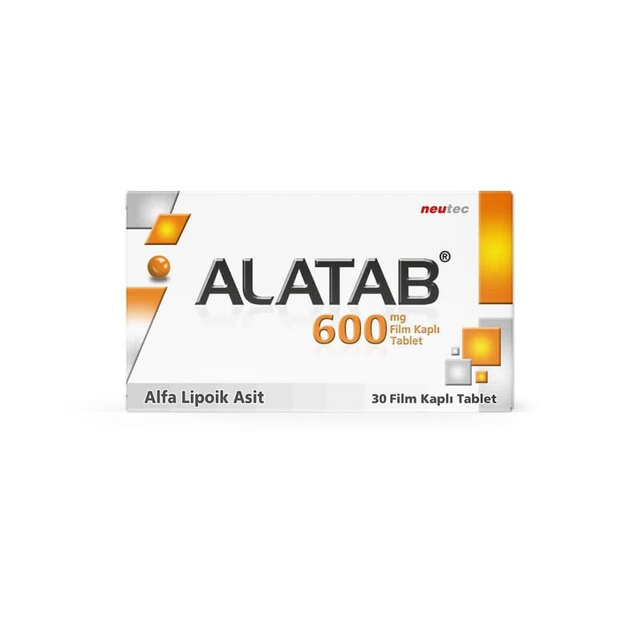

Alatab 600 mg Film Tablet, 30 Adet

Ne için kullanılır
KT · Bölüm 1ALATAB, etkin madde olarak 600 mg alfa-lipoik asit (tioktik asit) içeren film kaplı tabletlerdir. Alfa-lipoik asit (tioktik asit), sindirim sistemi ve metabolizma ürünleri grubunda yer almaktadır. Alfa-lipoik asit (tioktik asit), vücut metabolizması sırasında oluşan bir maddedir ve vücudun belli bazı metabolik işlevleri üzerine etkiye sahiptir. Ayrıca, zararlı parçalanma ürünlerine karşı sinir hücrelerini koruyucu özelliklere (anti-oksidatif) sahiptir.
ALATAB oblong, bombeli, yeşil renkli film kaplı tabletler halinde 30 film kaplı tablet PVC/PE/PVDC Şeffaf/Alüminyum blister ambalajlarda sunulmaktadır.
ALATAB, şeker hastalığında (diyabet) diyabetik nöropati adı verilen, çevresel sinir hasarına bağlı olarak vücudun uç bölgelerinde ortaya çıkan ağrı, his kaybı, kuvvet kaybı gibi belirtilerin tedavisinde kullanılır.